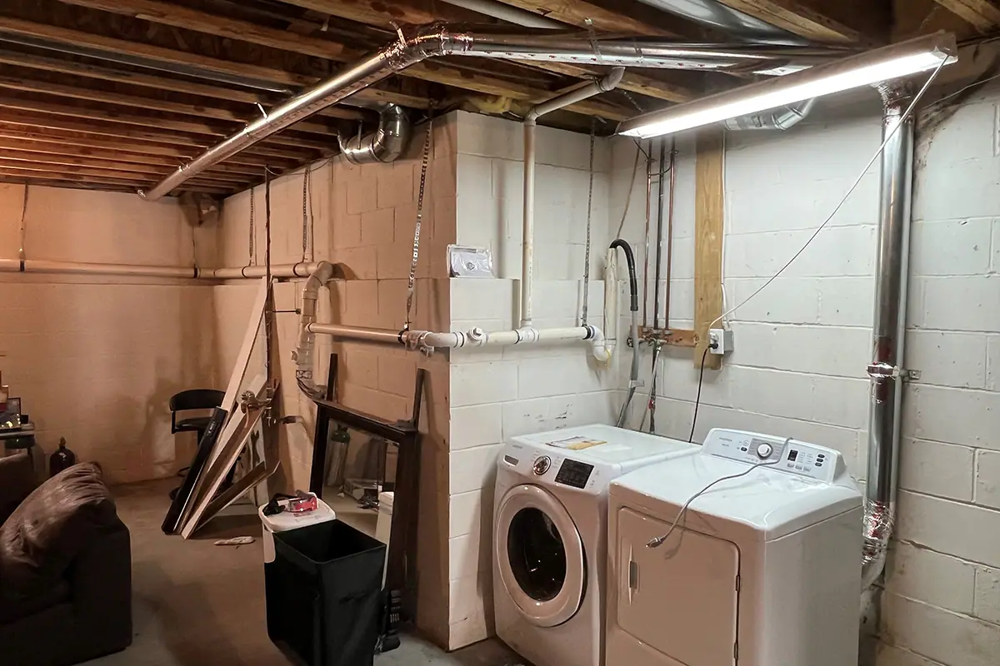
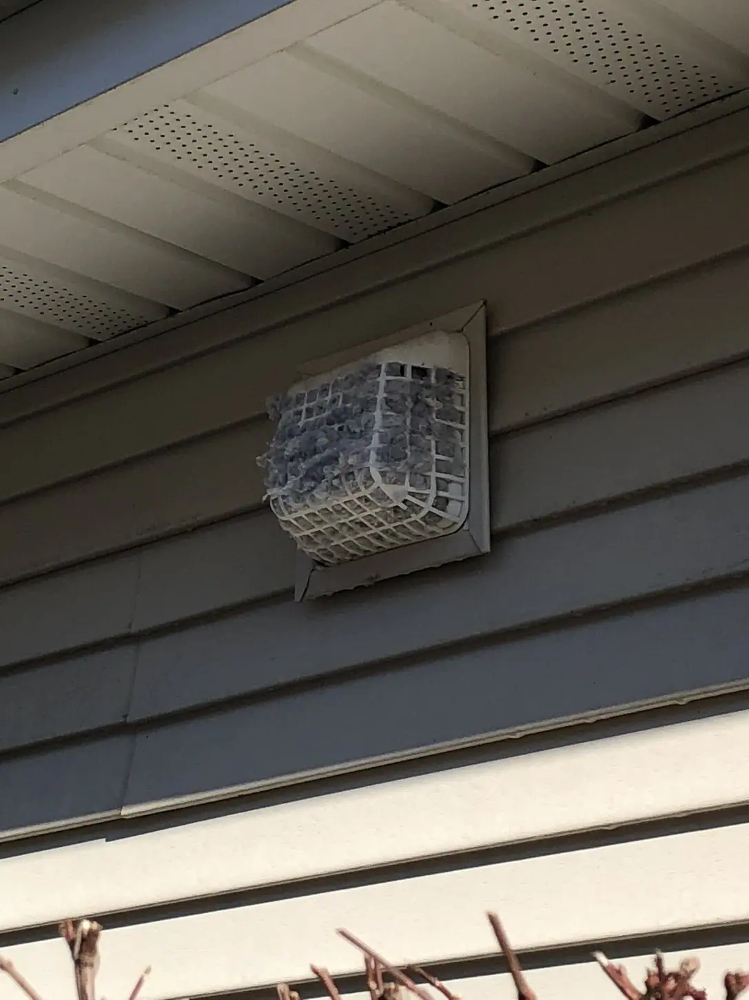
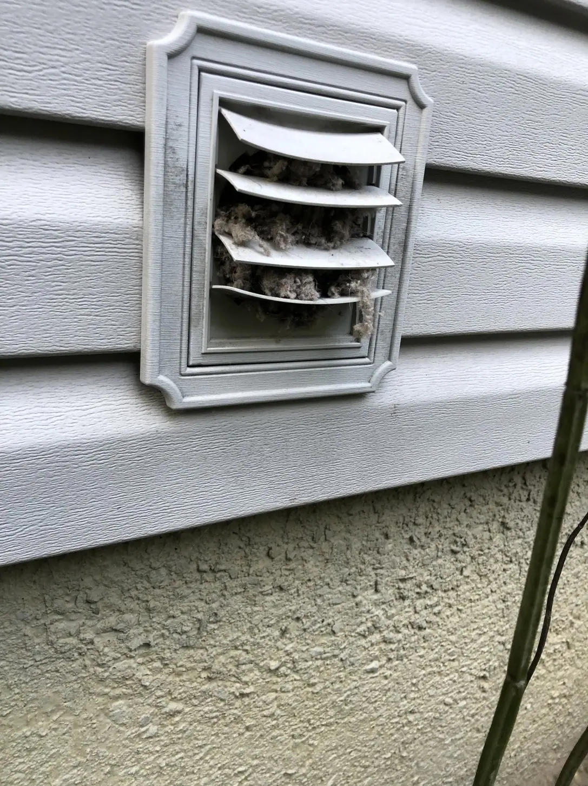
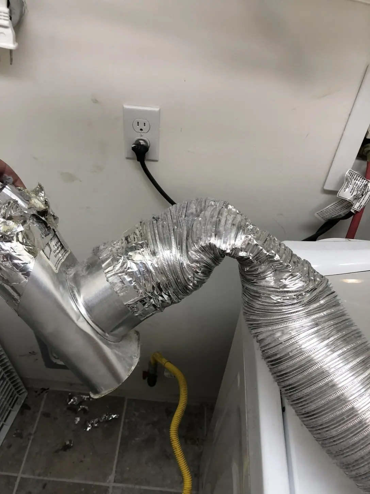
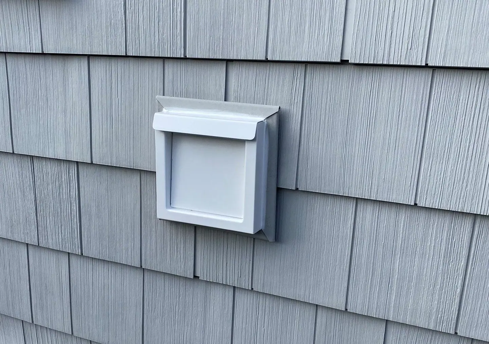
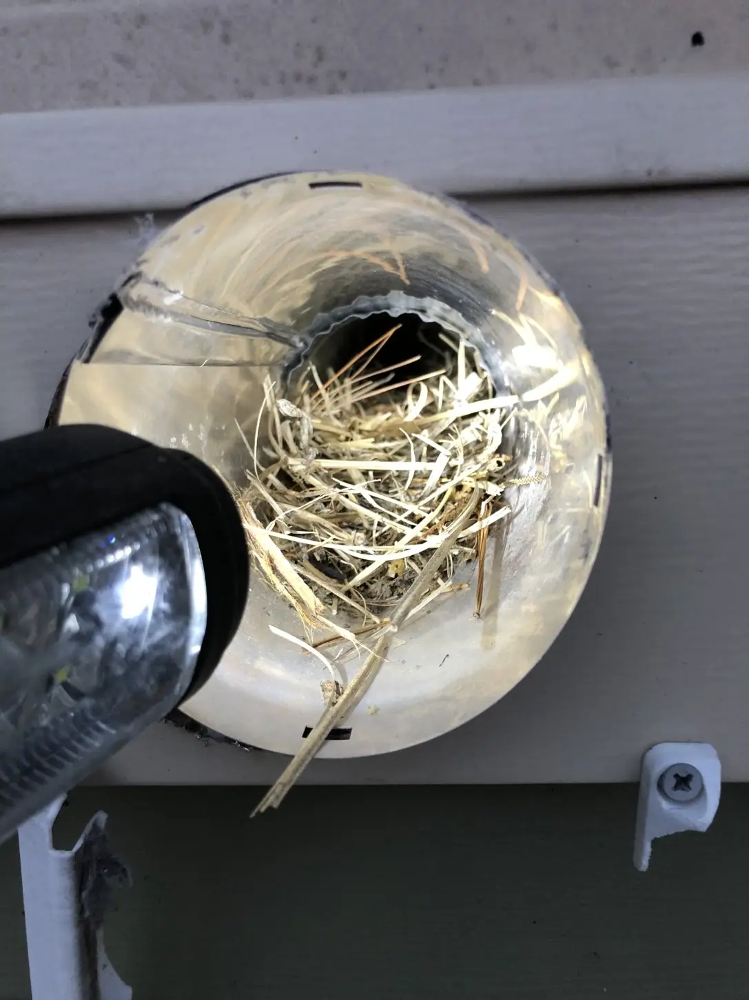
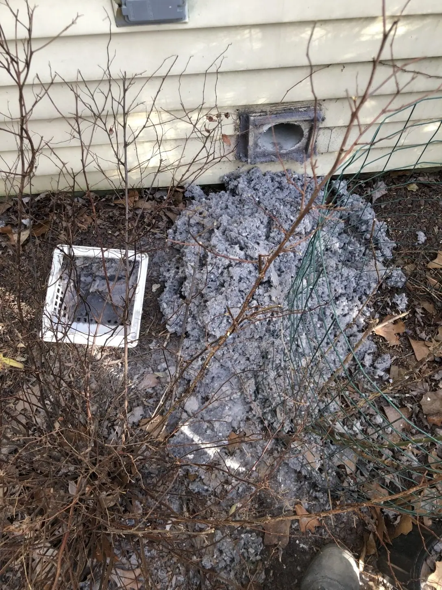
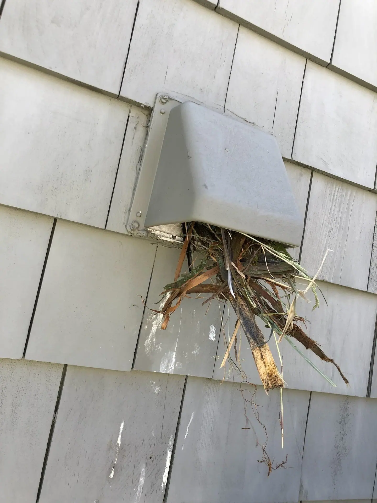

New Vent Installation
Installation of new dryer duct runs and exterior exhaust covers.
Explore service →
Competitive Pricing | Free Consultations and Estimates | Family-Owned & Operated
Cleanings · Installs · Re-Routes · Repairs · Upgrades · Bird Nest Removal

According to the National Fire Protection Association, nearly 16,000 laundry fires are reported every year. Many of these fires start when dust, fiber, or lint ignites.
Regularly scheduling dryer vent cleaning by the professionals at Affordable Dryer Vent & Gutter Cleaning can help you eliminate a common fire hazard in your home, hotel, or laundromat in the Toms River, NJ area.
Did you know that most dryer fires start inside the dryer? The most important part of dryer vent cleaning is disassembling and cleaning the inside of the dryer. It’s called Dryer De‑Linting.


After hiring Affordable Dryer Vent & Gutter Cleaning to clean your laundry ventilation system, you might notice several benefits.
Contact our dryer vent cleaning specialists now to make your property safer and prolong your appliance’s service life.
We Also Install and Repair Dryer Vent Systems
As a full-service dryer vent installation and repair company, we can do whatever is needed to improve your ventilation system. This includes insulating, relocating, and upgrading your vents.
Not sure whether to schedule dryer vent repairs or a replacement? We can give you an expert opinion.

Installation of new dryer duct runs and exterior exhaust covers.
Explore service →


“Only good things to say here. Showed up early. Super clean work. Fixed up work that was done by others that did not know what they were doing. Polite, clean and courteous. Totally professional company.”
“Nick and AJ did a great job cleaning our gutters and the dryer vent. Nick was very thorough with the job. Nick was upfront with what needed to be done right away and what could wait. Found the prices for the job to be reasonable.”
From clogged dryer vents to gutter guards, we treat every home like family. Tell us what you need and we’ll help you decide on the next step.
Drag the handle to compare illustrative photos from different jobs.


Illustrative comparison; photos from different jobs.

Illustrative comparison; photos from different jobs.

We also specialize in bird nest removal and prevention from dryer vents and bathroom exhaust vents. We can easily remove bird nests and help keep them out with accessories added to the vent.
Dryer vent cleaning, repair and installation — plus expert gutter care.
From clogged dryer vents to gutter guards, we treat every home like family. Tell us what you need and we’ll help you decide on the next step.
Trained and certified to help keep your dryer running safely and efficiently.
Local · Family-Owned & Operated